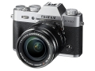
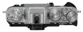
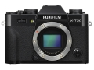
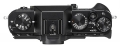

器材库 > APS及其以下画幅可换镜头数码相机 > X-T20

规格总览
产品类型
APS画幅可换镜头数码相机
发布日期
2017-01-19
影像规格
影像传感器
X-Trans CMOS III
影像传感器尺寸
23.6×15.6mm
有效像素
2430万
影像处理器
X-Processor Pro
静态图像格式
JPEG, RAW, RAW+JPEG
静态图像尺寸
L: (3:2)6000×4000 / (16:9)6000×3376 / (1:1)4000×4000 M: (3:2)4240×2832 / (16:9)4240×2384 / (1:1)2832×2832 S: (3:2)3008×2000 / (16:9)3008×1688 / (1:1)2000×2000
短片格式
MPEG4-AVC/H.264
短片尺寸
[4K (3840x2160)] 29.97p / 25p / 24p / 23.98P, 100Mbps [全高清 (1920x1080)] 59.94p / 50p / 29.97p / 25p / 24p / 23.98P, 36Mbps [高清 (1280x720)] 59.94p / 50p / 29.97p / 25p / 24p / 23.98P, 18Mbps
音频格式
线性PCM / 立体声48KHz
防抖系统
OIS型号镜头支持
除尘系统
传感器清洁系统：超声波振动
镜头和对焦
镜头卡口
Fujifilm X
对焦系统类型
智能混合自动对焦（TTL对比检测自动对焦）
对焦模式
单点自动对焦 / 连续自动对焦 / 手动对焦
手动对焦
支持
曝光控制
测光系统
TTL 256区测光
测光模式
中央重点测光, 点测光, 平均测光, 多重测光
曝光模式
P(程序优先)/A(光圈优先）/S(快门优先）/M（手动）
胶片模拟模式
15种模式（PROVIA /标准、Velvia / 鲜艳、ASTIA / 柔和、经典正片、PRO Neg.Hi、PRO Neg.Std、黑白、黑白+黄色滤镜、黑白+红色滤镜、黑白+绿色滤镜、怀旧棕褐色、ACROS、ACROS+黄色滤镜、ACROS+红色滤镜、ACROS+绿色滤镜）
创意滤镜
玩具相机/微缩景观/流行色彩/高调/低调/动态色调/柔焦/局部色彩（红色/橙色/黄色/绿色/蓝色/紫色）
快门类型
焦平面快门
快门速度
机械+电子快门：4-1/32000秒（P）、30-1/32000秒（所有模式）、B门（最高60分钟）、T门：30-1/32000秒
闪光同步速度
1/180秒或更慢
曝光补偿
±5EV以1/3EV级调整
自动包围曝光
±2EV / ±5/3EV / ±4/3EV / ±1EV / ±2/3EV / ±1/3EV
ISO感光度
标准输出感光度：自动1 / 自动2 / 自动3（最高达ISO12800）/ ISO200至12800（1/3 EV步长） 扩展输出感光度：ISO100 / 25600 / 51200
白平衡
自动场景识别 / 自定义 / 色温选择（K）/ 预设： 晴天、阴天、荧光灯（日光）、荧光灯（暖白）、荧光灯（冷白）、白炽灯、潜水
自拍
10秒 / 2秒
连拍
8.0帧/秒
闪光灯
内置闪光灯
弹出式
闪光模式
TTL（自动闪光/标准/慢同步）/ 手动模式/ 指令模式/ 关闭
闪光指数
约7 （ISO200 · m） / 约5 （ISO100 · m）
取景器/显示屏
取景器
OLED电子取景器
取景范围
100%
取景放大倍率
0.62倍
屈光度调节范围
-4m ~ +2m-1(dpt)
LCD类型
彩色TFT LCD
LCD像素
104万
视野率
100%
LCD特性
触摸屏, 翻转屏
文件输入/输出
记录媒介
SD/SDHC, SDXC
数据接口
USB2.0, 微型USB
视频/音频接口
D型HDMI接口
无线功能
Wi-Fi
电源
电池
NP-W126S锂电池
续航能力
静止图像：约350幅视频：4K约50分钟、全高清约60分钟
机身规格
颜色
银色, 黑色
尺寸
118.4×82.8×41.4mm
重量
仅机身约333g / 含电池和存储卡约383g
其它
配件端口
热靴, 麦克风输入端子
工作温度
0 - 40℃
工作湿度
10 - 80%
附件
锂电池NP-W126S，电池充电器BC-W126，机身盖，肩背带，金属带夹，保护盖，夹附加工具，使用说明书
drlyly752018-11-30 15:594.25 分
操作性 4.00功能性 5.00美观性 4.50趣味性 4.50耐用性 4.00性价比 4.00解像力 4.00色彩还原 4.00
产品图 / 样片
X-T20

X-T20

X-T20

X-T20
评测 / 相关文章
- 详细内容 （存档）
- 无反小钢炮 富士X-T20测评 （存档）
- ［试用］富士X-T20+XF50/2WR实拍样张 （存档）
- ［资讯］富士X-T20外观图赏 （存档）
- ［资讯］大开视界 富士FUJIKINA新品器材图赏 （存档）
- ［行情］价格喜人 富士新品国外预订 （存档）
- ［资讯］大政奉还 富士FUJIKINA新品发布会实录 （存档）
相关文章
- ［资讯］富士X-Pro2等固件更新发布 （原站已下线）
- ［试用］无反小钢炮 富士X-T20测评 （存档）
- ［试用］富士X-T20+XF50/2WR实拍样张 （存档）
- ［资讯］富士X-T20外观图赏 （存档）
- ［资讯］大开视界 富士FUJIKINA新品器材图赏 （存档）
- ［行情］价格喜人 富士新品国外预订 （存档）
- ［资讯］富士发布旗舰无反相机X-T20 （存档）
- ［资讯］大政奉还 富士FUJIKINA新品发布会实录 （存档）